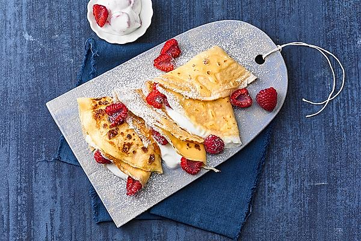

Pancakes

They are the best pancakes in the world. Enjoy! You may also add fruit to the pancake batter before grilling the pancakes.
Ingredients
- 2 eggs
- 2 teaspoons white sugar
- 1 pinch salt
- 250g flour
- 2 teaspoons baking powder
- 450ml milk
Method
- Beat eggs until fluffy; beat in sugar and salt. In a separate bowl, stir flour and baking powder together.
Stir milk and flour mixture alternately into eggs, starting and ending with milk.
- Heat a lightly oiled griddle or frying pan over medium high heat. Pour or scoop the batter onto the griddle,
using approximately 1/4 cup for each pancake. Do not turn pancake until tiny holes appear all over the uncooked side (top) of the pancake in the pan.
Brown on both sides and serve hot.
Return to Main Page